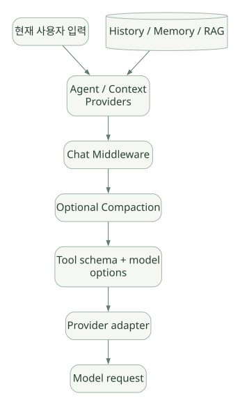

SECOND STUDY / 상태와 모델 입력
상태와 모델 입력
이번 단원의 읽는 관점
Session·History·FileMemory·RAG·Checkpoint와 Context 변환을 나눕니다.
살펴볼 경계Compaction·Prefix Cache·영구 기억은 목적과 수명이 다릅니다.
이 페이지의 세부 목차
13. Session, History, Memory, Checkpoint가 어떻게 다른가?#
| 대상 | 목적 | 대표 데이터 | 저장 수명 | 자동으로 해결하지 못하는 것 |
|---|---|---|---|---|
AgentSession |
대화·승인·Provider별 실행 상태 연결 | 세션 ID, state, service session handle | 한 대화/사용자 범위 | 모델 지식 정확성, DB 인가 |
HistoryProvider |
과거 메시지 관리 | role/message/Content | 세션 또는 지정 저장소 | 장기 정보 선별·검색 품질 |
FileMemoryProvider |
모델이 메모리 읽기/쓰기 도구 사용 | 메모리 파일 및 scope | 세션별/명시 scope | 메모리의 품질·진위 |
| RAG Context Provider | 외부 지식 검색/주입 | 검색문서·메타데이터·인용 | 외부 저장소 기준 | 잘못된 자료·권한 분리 |
| Workflow Checkpoint | 실행 중 상태 복원 | Executor state, pending messages/requests, graph hash | Workflow 실행 및 저장소 범위 | 외부 부작용 정확히 한 번 처리 |
AgentSession 자체가 벡터 DB는 아니다. FileMemoryProvider는 scope 지정에 따라 여러 세션이 파일을 공유할 수도 있지만, 기본 scope가 세션별로 분리될 수 있다는 공식 문서를 먼저 확인해야 한다. Scope는 권한 경계와 연결되므로 사용자 입력을 그대로 폴더 경로처럼 쓰지 않는다. [D04]
13.1 History 저장 시점의 미묘함#
MAF Harness 문서는 Per-service-call history persistence를 별도 기능으로 나열한다. 모델이 Tool을 부르고 다시 모델을 호출하기 전에도 현재 Tool Call/Result 이력을 보존할 수 있도록 설계된다. 일반적인 ‘Agent 최종 답변 후 저장’ 방식과 다른 점이다. [D02]
실패 사례: 1차 모델 호출이 Tool을 요구하고 Tool은 외부에 쓰기를 수행했다. 2차 모델 호출 직전에 서버가 죽었다. History가 이전까지 영속화되지 않았다면 복구 후 첫 Tool이 다시 실행될 수 있다. 중간 저장이 리스크를 줄일 수는 있지만, 외부 작업 원자성을 대신하지는 않는다. [INF]
14. Context Assembly, Compaction, Cache의 책임 분리#
14.1 실제 모델에 무엇이 들어가는가?#
MAF의 최종 모델 요청은 여러 층에서 만들어질 수 있다. [D01][D04]
가로로 이동해서 읽을 수 있습니다. 도식 크게 보기 ↗

원문의 학습용 도식입니다. 연결 방향·분기 조건·점선·쌍방향 연결을 보존해 세로로 배치했습니다. 실제 구현·의사코드·해석의 구분은 본문을 함께 읽으세요.
도식 원문 보기 (Mermaid)
flowchart TD
IN[현재 사용자 입력] --> PRE[Agent / Context Providers]
SS[(History / Memory / RAG)] --> PRE
PRE --> CC[Chat Middleware]
CC --> CMP[Optional Compaction]
CMP --> SCHEMA[Tool schema + model options]
SCHEMA --> PROV[Provider adapter]
PROV --> LLM[Model request]그림은 책임 관계를 보여주는 개념도다. Provider별 최종 메시지 직렬화, Compaction의 정확한 단계, 캐시 키는 다를 수 있으므로 실제 Provider 어댑터가 보내는 payload를 확인해야 최종 토큰 배열을 단정할 수 있다. [S02][S06]
14.2 세 개념의 차이#
- Compaction: 기존 메시지의 일부를 요약·교체·제거해 모델이 볼 컨텍스트 크기를 줄인다. 정보 손실 가능성이 있다.
- Prefix Caching: 모델 제공자가 동일한 입력 Prefix에 대한 계산을 재사용하는 기능. 프롬프트 데이터가 다시 전송될 수 있더라도 내부 계산을 재사용할 수 있다. Cache Hit는 Prefix 안정성·공급자 정책에 의존한다.
- Persistent Memory: Session을 넘어 필요한 정보를 저장·검색한다. 모델의 컨텍스트를 무한히 확장하지 않는다.
_clients.py에는 모델 호출 전에 메시지를 준비하는 _prepare_messages_for_model_call 경로가 보인다. compaction_strategy와 tokenizer를 전달한다. 하지만 “모든 모델 요청에 캐싱이 자동으로 활성화된다”는 주장은 공식 Provider별 검증 없이 할 수 없다. [S02][S06]
14.3 모델이 보는 입력을 재구성하는 조사 방법#
RawAgent에서instructions와 현재 메시지가 언제 합쳐지는지 추적한다.ContextProvider가 반환한 메시지와 Tool이 어디에 추가되는지 확인한다.- Chat Middleware에서 수정된 메시지가 실제
BaseChatClient에 전달됐는지 확인한다. - Compaction 전략의 원본 History 수정 여부와 모델 전송 직전의 복사본을 구별한다.
- Provider가 Tools/response format/metadata를 각 모델 API의 어떤 필드로 직렬화하는지 확인한다.
- Prefix Cache는 실제 API 사용량 기록으로 검증한다. 문서만으로 캐시 적중률을 단정하지 않는다.